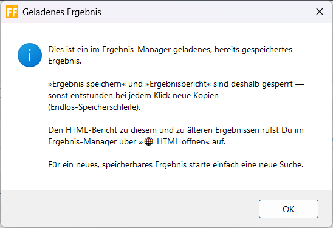
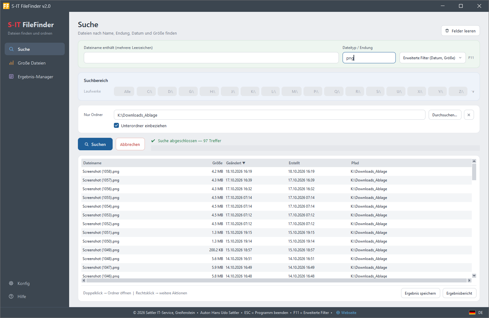

Neue Oberfläche NEU
Links eine Seitenleiste mit Suche, Große Dateien, Ergebnis-Manager, Konfig und Hilfe; Suchkriterien, Laufwerke und Ordner stehen in eigenen, farblich abgesetzten Kästen.
18 Sprachen NEU
Von Deutsch und Englisch bis Bulgarisch und Mazedonisch – gewählt in der Konfiguration über ein Auswahlfenster. Übersetzt sind die Oberfläche, alle Meldungen, der Ergebnis-Manager und der HTML-Bericht.
Namensbruchstücke
Suche nach einem oder mehreren Teilen des Dateinamens – durch Leerzeichen getrennt, Groß-/Kleinschreibung egal.
Alle Laufwerke
Lokale Laufwerke und eingebundene Netzlaufwerke per Häkchen auswählen – einzeln oder alle auf einmal, durchsucht in einem Durchgang.
Gezielte Ordnersuche NEU
Statt ganzer Laufwerke nur einen bestimmten Ordner durchsuchen. Neu: Wahlweise mit oder ohne Unterordner – liegt die Datei direkt im Ordner, ist die Suche so noch schneller fertig.
Dateityp / Endung
Gezielt nach Dateitypen suchen – z. B. jpg, .pdf oder docx, mit oder ohne Punkt.
Datum & Größe
Erstell- und Änderungsdatum sowie Dateigröße als erweiterte Filter – per F11 jederzeit ein- oder ausklappbar.
Sortieren per Klick
Ein Klick auf die Spaltenüberschrift sortiert die Treffer nach Name, Größe, Datum oder Pfad – Größe und Datum korrekt nach echtem Wert, nicht nach Text.
Große Dateien finden
Eine eigene Ansicht zeigt auf Knopfdruck die 100 größten Dateien der gewählten Laufwerke oder des gewählten Ordners – ideal, um Speicherfresser aufzuspüren. Die Treffer der normalen Suche bleiben dabei erhalten.
Zusammenführen: Kopieren, Verschieben, Papierkorb
Verstreute Treffer markieren und direkt im Tool an einem Ort zusammenführen – kopieren, verschieben oder in den Papierkorb legen, mit Fortschrittsanzeige und ohne versehentliches Überschreiben.
Speichern & Ergebnis-Manager
Suchergebnisse speichern und später wieder laden oder als HTML-Bericht ansehen – verwaltet im übersichtlichen Ergebnis-Manager.
Fünf Farbschemata NEU
Standard, Weich-Hell, Gedämpft, Stärker gedämpft und Dunkel – die Farben der Oberfläche passend zu Bildschirm und Arbeitsumgebung.
Anzeige & Konfiguration
Darstellungsgröße 90–200 %, unabhängig von der Skalierung in Windows; das Fenster bleibt oberhalb der Taskleiste. Dazu Standard-Sortierung, Sprache und Farbschema – zentral in der Konfiguration.
S-IT FileFinder spricht 18 Sprachen: Deutsch, Englisch, Französisch, Spanisch, Italienisch, Niederländisch, Polnisch, Dänisch, Kroatisch, Bosnisch, Serbisch, Montenegrinisch, Slowenisch, Albanisch, Rumänisch, Türkisch, Bulgarisch und Mazedonisch. Die Sprache lässt sich jederzeit in der Konfiguration umstellen. Hilfe und Änderungsverlauf gibt es in den folgenden vier Sprachen; bei allen übrigen Sprachen öffnet das Programm die englische Hilfe.
English






Die aktuelle Version findest du im Release-Bereich auf GitHub.
| Komponente | Anforderung |
|---|---|
| Betriebssystem | Windows 10 / Windows 11 (64-Bit) |
| Bildschirm | Ab 1024 × 768 – optimiert für FHD und UHD/4K |
| Sprachen | 18 Sprachen – im Programm umstellbar; Hilfe auf Deutsch, Englisch, Französisch und Spanisch |
| Rechte | Keine Administratorrechte erforderlich |
| Installation | Nicht erforderlich – portabel, direkt aus dem Ordner startbar |
| Lieferumfang | S-IT-FFStart.exe zum Starten, Ordner S-IT-FileFinder_Prog (Programm und Laufzeitdateien mit den Unterordnern Lang für die Sprachpakete und Help für Hilfe und Änderungsverlauf in vier Sprachen) und Ordner License_Disclaimer (Lizenz und Haftungsausschluss) |
- Neu: Oberfläche mit Seitenleiste für Suche, Große Dateien, Ergebnis-Manager, Konfig und Hilfe; Suchkriterien, Laufwerke und Ordner stehen in eigenen, farblich abgesetzten Kästen, „Felder leeren“ oben rechts setzt die Ansicht zurück
- Neu: Fünf Farbschemata in der Konfiguration – Standard, Weich-Hell, Gedämpft (Vorgabe), Stärker gedämpft und Dunkel
- Neu: Bei einer Ordnersuche lässt sich wählen, ob die Unterordner mitdurchsucht werden oder nur die Dateien direkt im Ordner; die Einstellung wird mit dem Ergebnis gespeichert
- Neu: Große Dateien als eigene Ansicht mit eigener Trefferliste – die Treffer der normalen Suche bleiben beim Wechsel erhalten
- Neu: 18 Sprachen – neu sind Italienisch, Niederländisch, Polnisch, Dänisch, Kroatisch, Bosnisch, Serbisch, Montenegrinisch, Slowenisch, Albanisch, Rumänisch, Türkisch, Bulgarisch und Mazedonisch; gewählt wird über ein Auswahlfenster in der Konfiguration
- Verbessert: Die eingestellte Skalierung (90–200 %) gilt unabhängig von der Skalierung in Windows; das Fenster bleibt oberhalb der Taskleiste, reicht der Platz nicht, erscheint ein Rollbalken
- Konfiguration, Ergebnis-Manager und Dateiaktionen im neuen Erscheinungsbild; Hilfe in allen vier Sprachen überarbeitet
Alle früheren Versionen im vollständigen Änderungsverlauf: Deutsch · English · Français · Español
S-IT FileFinder wird kostenlos entwickelt und gepflegt – über eine kleine Unterstützung freue ich mich:
PayPal – tool-entwicklung@sattler-it.de